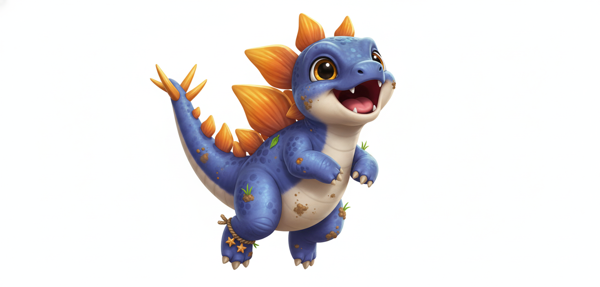
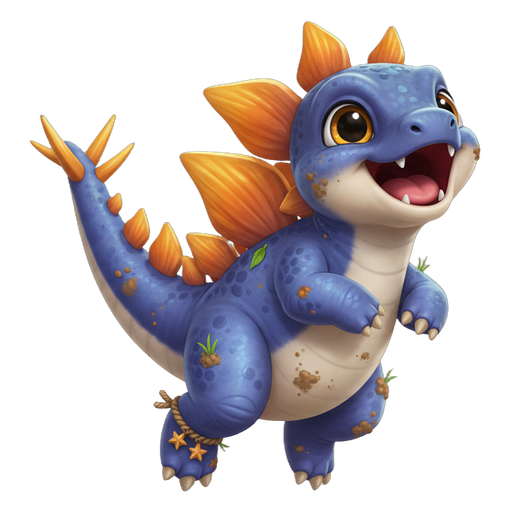
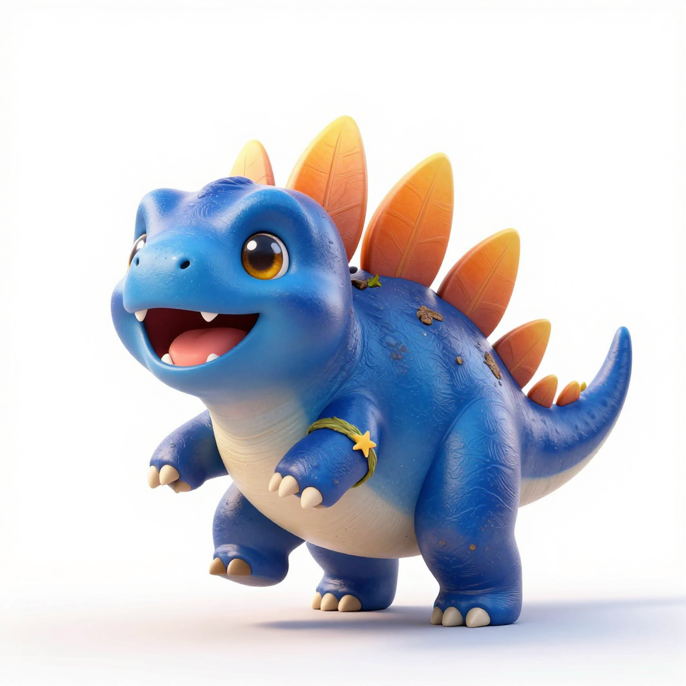
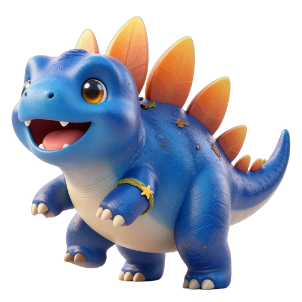

/image-edit＋Z-Image-Turbo（¥0.25/張）成功出圖。| 管線 | 原始生成 | 完工磚 512×512 RGBA |
|---|---|---|
| Gemini 雙參考 gemini-2.5-flash-image |
 |
 |
| SophNet 純提示詞 Z-Image-Turbo・/image-edit |
 |
 |
兩版均為 1024 級白底原始圖 → rembg → 修剪 → 底部貼齊 → 512×512 RGBA WebP q90（各 51 KB）。
| 要素 | 落實 | 結果 |
|---|---|---|
| 家族特徵（風格A） | 兩版皆達：金琥珀大眼＋白色高光、開口笑小白牙粉舌、奶油白肚、黃橙色背板/尾棘、緞面光澤（要素F：非塑膠/乙烯基硬反光）、可見細鱗紋理 | ✔ |
| 物種對應（要素6） | 劍龍雙排風箏形背板均為視覺主角且全數露出、剪影一眼可辨；青金石藍主色與家族金色系對比（要素E） | ✔ |
| 星級階梯（要素9） | 3★ 編織草環臂飾（不遮背板）＋泥漬/草葉沾黏（要素G）兩版皆有 | ✔ |
| 去背乾淨（要素2） | 純白殘留不透明像素 Gemini 0.03%／SophNet 0.02%（僅眼部高光）→ 無白邊 | ✔ |
| 圖內無文字（要素3） | 兩版皆無文字／浮水印／簽名 | ✔ |
| 兩版差異 | 姿勢：Gemini 騰空跳躍（更貼提示詞）／SophNet 站立抬腿（穩重）。尾棘：Gemini 有尾端棘刺叢／SophNet 尾端平滑（沿尾小棘板有）。體色：Gemini 較貼青金石靛藍／SophNet 偏天青藍 | 差異 |
| 技術規格（要素A） | 512×512 RGBA WebP q90＝51 KB×2（規格帶 15–40 KB 為約值；降品質會損光澤，保留 q90） | 約略 |
| 構圖（要素1） | 底部貼齊（兩版下緣皆約 3.5%，算法以修剪後邊長取 4% 邊距所致）、水平置中；原始生成邊距充足 | 約略 |
gemini-2.5-flash-image；參考圖＝DFD-000_伴伴_2star.png（壓白底）＋劍龍_Stegosaurus_no231_★★★☆☆.png（解剖）；腳本 _gen_gemini_styleA_stegosaurus.py；後處理 _post_styleA_stegosaurus.pyPOST /api/open-apis/projects/easyllms/image-edit（同步、非 task 輪詢），模型 Z-Image-Turbo（qwen-image 系列當日全部未部署），size 1024×1024、watermark off；負面提示詞內嵌提示中；腳本 _gen_sophnet_styleA_stegosaurus.py（task 版待命）；後處理 _post_sophnet_stegosaurus.pygemini_styleA_stegosaurus_512.webp、sophnet_styleA_stegosaurus_512.webp（皆遊戲磚規格）